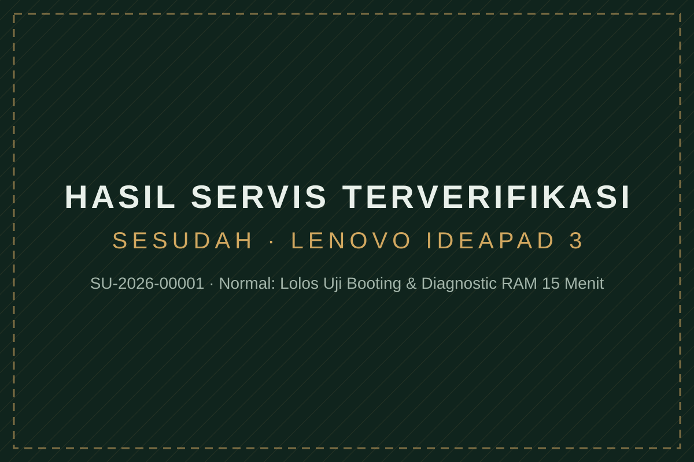

Trofi 01 · Laptop
Layar hitam, ternyata RAM longgar
- Perangkat
- Lenovo IdeaPad 3
- Temuan terkonfirmasi
- Modul RAM tidak terpasang sempurna
- Hasil uji akhir
- Tampil normal, lolos uji RAM 15 menit
Setiap perbaikan dicatat, dilaporkan tertulis, dan bisa dilihat hasilnya.
Booking Servis & Buat Tiket Lihat hasil servis Kontak & lokasi
Keluhan, kondisi perangkat, dan estimasi biaya tertulis di tiket dengan nomor sendiri.
Teknisi menandai tiap pemeriksaan: lulus, gagal, atau tidak relevan. Kerusakan baru disebut setelah terkonfirmasi.
Anda menerima laporan berisi pemeriksaan, tindakan, komponen, hasil uji akhir, dan biaya yang disetujui.